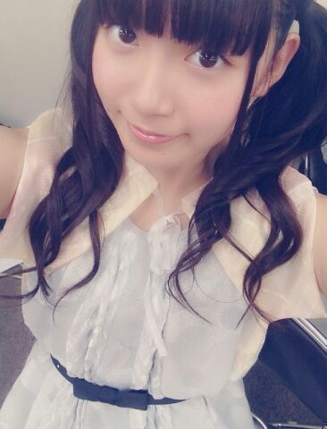
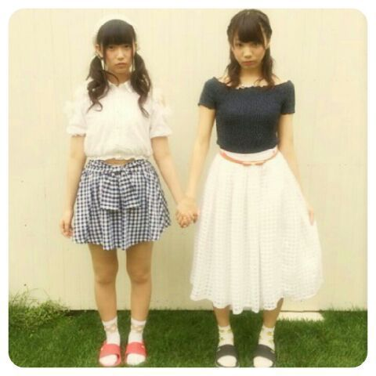
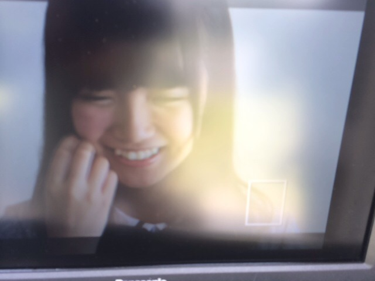

| 2014/07 13 Sun | 中元日芽香 ひめたん-OoO-その459 |

金曜日、土曜日と
アンダーライブin六本木ブルーシアター
がありました(＾ω＾)
9thアンダーライブ
これで7公演が終わりました！
六本木としてはこれが千秋楽。
ブルーシアターのみなさん
ステキなステージをありがとうございました☆
アンダーライブに
来てくださったみなさん
本当にありがとうございました！
今回のアンダーライブは
いかがだったでしょうか？
行ったよーて方は
ぜひ感想を聞かせてほしいなー
日記のコメントとか、握手会とかで教えてねー♪
ひめきゅんさんへの報告としては
今回のユニットコーナーでは
海流の島よ、ダンケシェーンをしました！
海流の島よ は
飛鳥、川後、樋口、畠中、和田、中元
オリジナルメンバーみんなで
バースデーライブ以来の披露でした♪
オリメンのあの安定感は何だろう安心する。笑
ダンケシェーン は
飛鳥、永島、川後、樋口、新内、中元
いつもメンバーやってるのみてて
めっちゃ楽しそう！ひめたんもやりたい！って
思ってたから今回披露できて楽しかったです♪
あれ、今回どっちも6人ユニットだ(゜゜)
いま書いてて気づいた(゜゜)
あ！そうそう唐突だけど
お知らせとゆーかお願いとゆーか
公式サイトでもう
チェックしていただけてますか？
次のアンダーライブで見てみたいユニットを
みなさんから募集してまーーす( ´ ▽ ` )
歌ってほしい楽曲と歌唱メンバーを
募集しているので
ぜひぜひ投票してみてねー♪
それから
プリンシパルコント傑作選より
「入ってこないで」を
樋口、新内、中元でやりました！
プリンシパル行ってないよーって方は
こんなこと言っても
なんのこっちゃーて感じかもだけど
ひめたんはあの入ってくる奴をやりました←
基本的にコントにはトラウマがあるから
傷をえぐるようで
あんまやりたくなかったけどさ(笑)
でもちゃーんと演出をつけていただいて
みなさんが笑ってくれたから
楽しかったです(・∀・)
もうやりたいとは思わないけども←
だからあれだね、レアだね(・∀・)
報告はそんな感じかな？
なんか、
このライブを通して
またいっこ成長したいなーって思うの。
トークによる表現の仕方？
パフォーマンス？
いろいろと。ふわっとしてるけど。
とりあえず個人的に
前回よりも手応えがありました！
なによりやってて楽しかった( ^ω^ )
ひめたんコールやひめたんタオルや
ぴんくのサイリウムや
全部嬉しかったですっ
残りの3公演もがんばります！

そして！
ついに始まりました新番組「のぎ天」
#1はもう観ていただけましたか？
女子力チェーーーック回という
何ともひめたんが苦手そうな企画でした(笑)
いや、りぼんは女子だよね！
ひめたんはいま98個になったよ( 'ч' )
あんな感じで
メンバーの新しい顔が
たくさん観られる番組になっていると思います！
楽天SHOWTIMEから
毎週金曜日更新☆
次回はボーリング対決です♪♪
お楽しみにー(＾ω＾)

そして個人PV「SHIRITORI HOUSE」
9thシングルのType-Cに
収録されています
もう観ていただけましたかー？
今回のテーマは「しりとり」！
ごみ袋に入ってみたり、
スリッパで頭を叩いてみたり、
なんとひめたんはじめて歌いました(＊^O^＊)
ずっと歌いたかったんだー
テーマソングーふー♪♪
あっあれちなみに
なんでひめたんが変身したかわかるよね？
最後「ん」がついた罰ゲームだよ！
前回の日記のコメント読んでたら
ひめたんにスリッパで叩かれたい！て人が多くて
いや、何て返事したらいいか
よくわからんけどさ( ´_ゝ｀ )
あのシーン何回もやったなー
力が弱かったり
コントロールみすってあんまし当たらなかったり
スリッパぽーいが上手くいかなかったり
実は結構難しいんだよー
ひめたんがんばったんだよー！
そしてこの個人PV
撮ってくださった監督チームのみなさんが
とってもステキだったんです＊＊
写メ撮っとけばよかったなあ
たまたまこの日全員ボーダーのお洋服着てて
わー仲良しだー(((o(*゜▽゜*)o)))って。
撮影も終始ふわふわした感じで
なごやかーな感じで
とっても楽しかったです♪♪
みなさん「ひめたーん！」って呼んでくださるの！
ステキな作品になってると思うので
ぜひチェックしてみてくださいっ
さあ明日は個別握手会！
さらに乃木のの、乃木どこもあります！
乃木ののは
きいちゃん (北野日奈子ちゃん)
愛未 (能條愛未ちゃん)です☆
先週よりも笑ってて
進行が成立してるか不安なレベル......(笑)
ぜひ聴いてねー♪♪
(＊´・ω・＊)